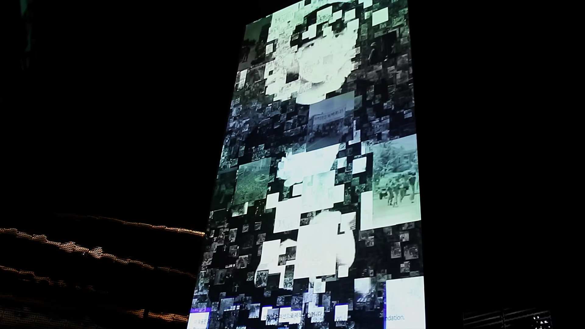
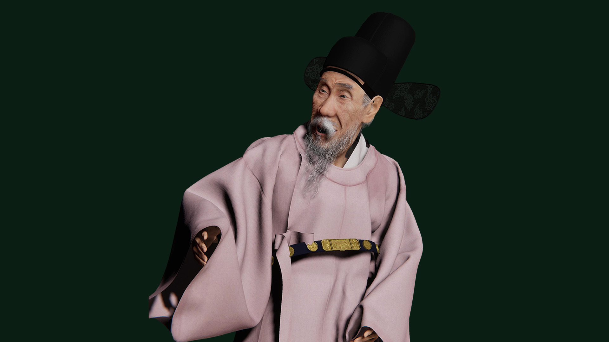
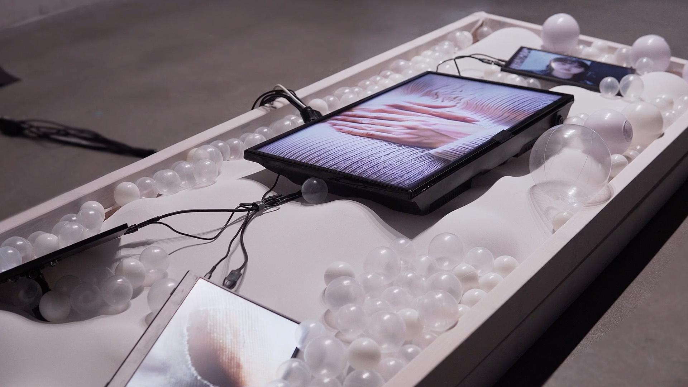
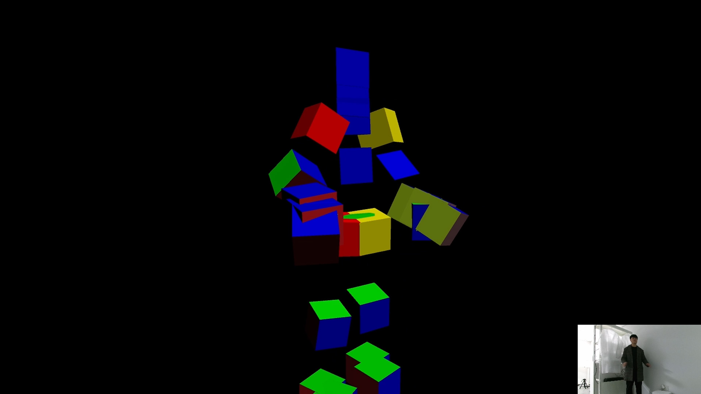
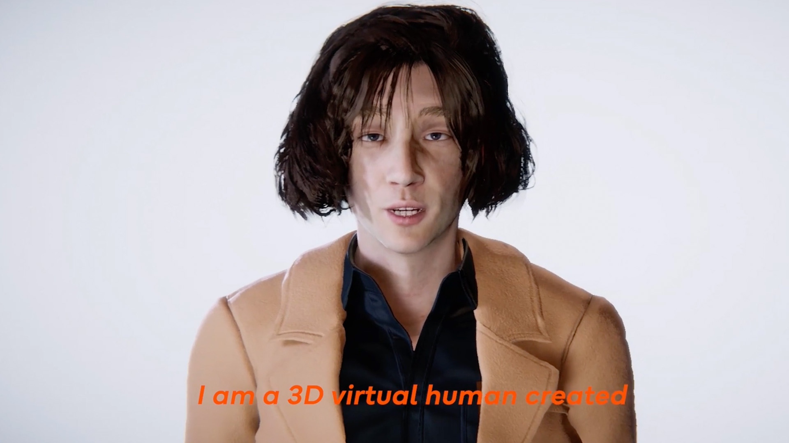

01 —
Interactive Art

To Eternity
↗
Interactive Installation
To Eternity
Archival photographs from the Gwangju Democratization Movement algorithmically mosaicked in real time over the viewer's live image.

AI Gang Se-hwang
↗
AI · Digital Human
AI Gang Se-hwang
Historical painter revived as an interactive AI docent blending 18th century scholarship with real-time conversation.

Jemulpo Photo Studio
↗
Computer Vision · Style Transfer
Jemulpo Photo Studio
Visitor portraits transformed into colonial-era magazine covers inspired by the "New Women" aesthetic of early Incheon.

AI ZOO
↗
Mixed Media Installation
AI ZOO
Balloons inside an acrylic sphere represent AI's diffusion and training models—inner workings made tangible.

Directed By AI
↗
Film · AI Co-Director
Directed By AI
Co-directed with an AI system using personal facial data to reconstruct virtual family members as fictional beings.

Silhak Dance
↗
Motion Capture · Real-time
Silhak Dance
Digital scholar Kim Yuk mirrors the audience's body movements—playful educational body interaction.

Track 6
↗
Kinect · Dance
Track 6
Full-body Kinect dance inside six distorted geometric physics worlds.

Beads Wall
↗
Generative · Participatory
Beads Wall
Human motion as pointillist bead compositions—silhouettes dissolve into vibrant shimmering patterns.

AI Choi Jung Hoon
↗
LLM · Real-time Avatar
AI Choi Jung Hoon
JANNABI vocalist reconstructed as a real-time AI avatar via LLMs—voice, personality, and appearance integrated.